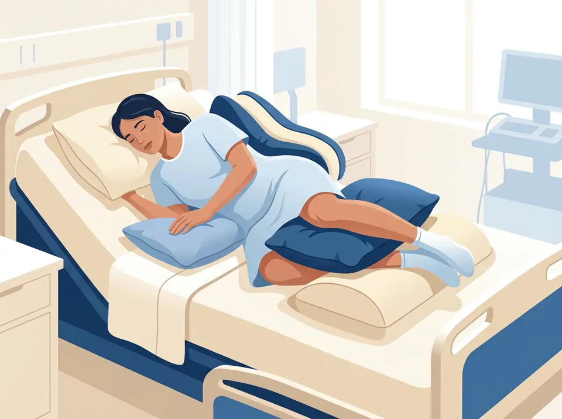

Cambie de posición
Moverse deja que la sangre vuelva a la piel que estaba apretada.
Haga
- Cambie de posición con regularidad. Su equipo de salud le dirá cada cuánto; lo habitual es cada 2 a 4 horas en cama, según el colchón y el riesgo.
- De lado, inclínese solo un poco (unos 30°), con una almohada en la espalda y otra entre las rodillas.
- Deje los talones «flotando»: almohada bajo las pantorrillas, con las rodillas apenas dobladas.
- Mantenga la cabecera lo más baja posible, no más de 30°, salvo para comer o si su médico indica otra cosa.
Evite
- Acostarse completamente de lado (90°): todo el peso cae sobre el hueso de la cadera.
- Arrastrar a la persona por la cama: levántela con ayuda de una sábana y de otra persona.
